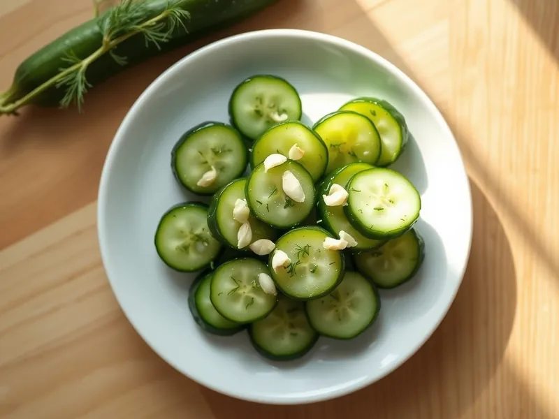

Малосольные огурцы в пакете за 2 часа
Хрустящие малосольные огурцы с укропом и чесноком без рассола, сухим способом в пакете
135 мин6 порц.35 ккал на порциюБ 2 · Ж 0 · У 7Русская кухня
Открыть в приложении: порции, таймеры, список покупок
Продукты на 6 порц.
- Огурцы8,5 шт
- Укроп1 пучок
- Чеснок4 зуб.
- Соль1 ст. л.
- Сахар1 ч. л.
- Перец чили по желанию1 шт
Как готовить
- Вымойте огурцы, срежьте кончики, крупные разрежьте вдоль на 4 части.
- Нарубите укроп, чеснок раздавите плоской стороной ножа.
- Сложите огурцы в плотный пакет, добавьте укроп, чеснок, соль, сахар и при желании кольца чили.
- Завяжите пакет и энергично встряхивайте 2-3 минуты, чтобы соль распределилась.
- Положите пакет в холодильник на 2 часа, за это время пару раз переверните.
- Достаньте огурцы, стряхните укроп и подавайте: они должны быть хрустящими и солоноватыми внутри.
Совет. Берите короткие пупырчатые огурцы для засолки: гладкие салатные огурцы просаливаются плохо и становятся мягкими.